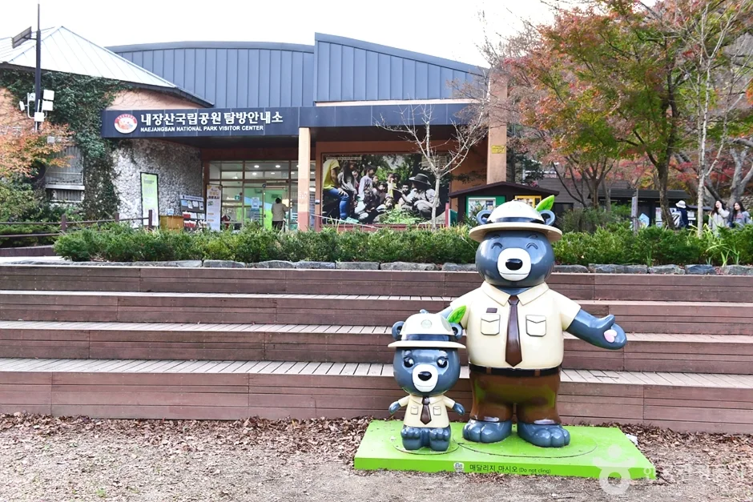
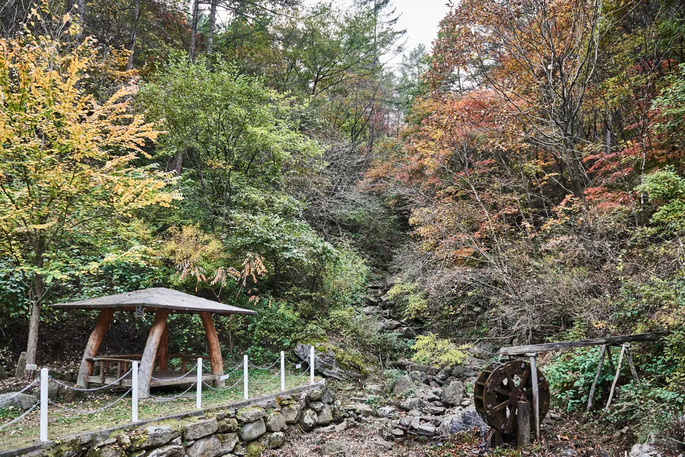
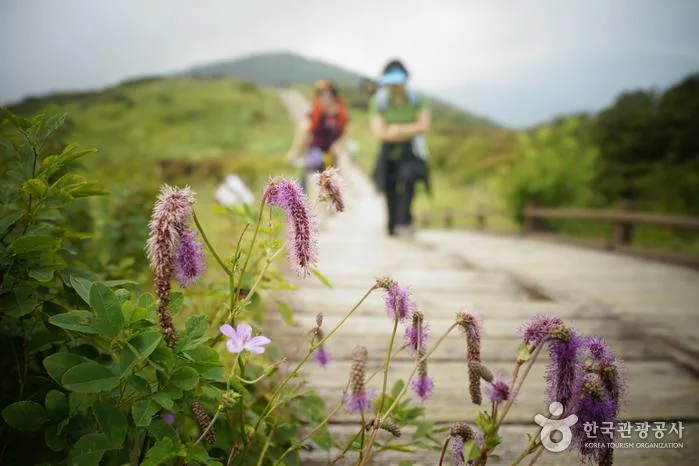
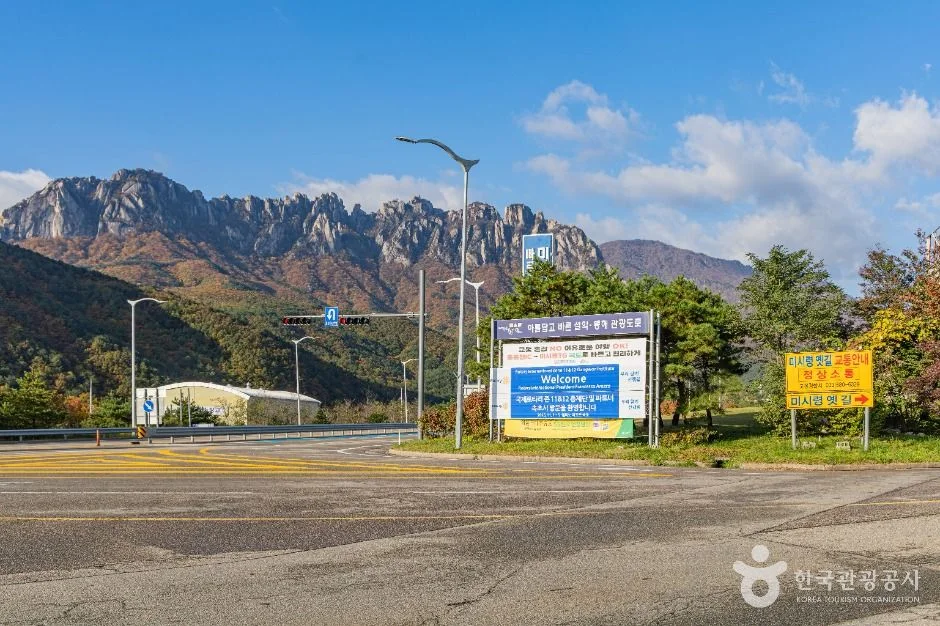
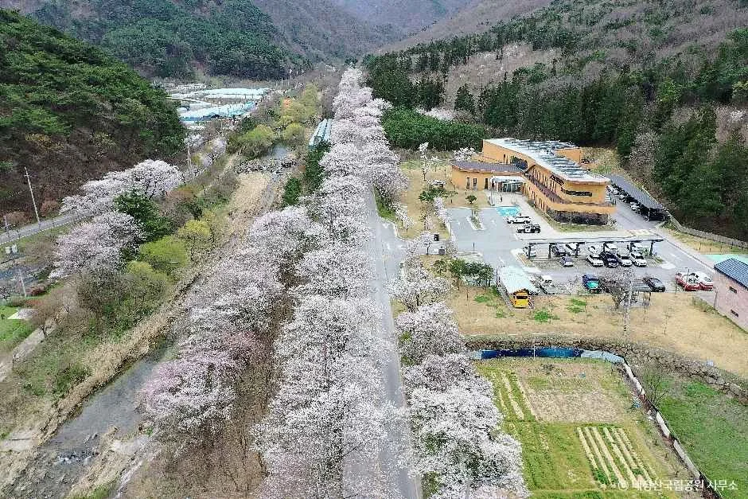

▲ 지리산 성삼재. 차로 오를 수 있지만 구간에 따라 사전 예약이 필요하다 ⓒ 한국관광공사 (공공누리 제1유형)
국립공원은 그냥 가면 되는 곳이라고 생각하기 쉽습니다. 대부분은 맞습니다.
그런데 일부 구간은 사전 예약 없이 들어갈 수 없습니다. 모르고 갔다가 입구에서 돌아 나오는 일이 실제로 생깁니다.
1. 왜 예약을 받나
탐방예약제의 목적은 인원 제한입니다. 생태 보전이 필요한 구간에 동시 진입 인원을 통제하는 방식입니다.
그래서 돈을 받는 제도가 아닙니다. 탐방료와 예약비 모두 무료입니다. 예약은 인원을 세기 위한 절차에 가깝습니다.
📍 무료인데 예약이 필요한 이유
국립공원 입장료는 2007년 1월 1일 폐지됐습니다. 국립공원 내 사찰의 문화재관람료도 2023년 5월 4일부터 면제됐습니다(일부 예외 사찰 있음). 지금 사실상 내는 것은 주차료 정도입니다.
탐방예약제는 요금 제도가 아니라 총량 관리 제도입니다. 특정 구간에 사람이 몰리면 등산로가 침식되고 식생이 훼손됩니다. 무료임에도 예약을 받는 것은, 가격이 아니라 수를 제한하려는 설계입니다.

▲ 성삼재. 해발 1,102m 고개에 주차장과 휴게소가 있다 ⓒ 한국관광공사 (공공누리 제1유형)
2. 예약 방법
| 단계 | 내용 |
|---|---|
| 1 | 국립공원 예약통합시스템 접속 |
| 2 | 본인 명의 휴대전화 인증 |
| 3 | 탐방일·구간·인원 선택 |
| 4 | 현장에서 예약 확인 |
본인 명의 인증이 필요하다는 점이 실무적으로 중요합니다. 가족이나 지인 것을 대신 잡아주기 어려운 구조이므로, 동행 각자가 예약하거나 대표자가 인원을 함께 등록해야 합니다.

▲ 탐방안내소. 예약 확인과 안전 안내가 이뤄지는 지점이다 ⓒ 한국관광공사 (공공누리 제1유형)
3. 주차는 별도입니다
가장 자주 오해하는 부분입니다. 탐방 예약이 무료라고 해서 주차까지 무료는 아닙니다.
성삼재주차장처럼 차로 올라가는 지점의 주차장은 별도 요금이 부과됩니다. 예약과 주차는 완전히 다른 절차입니다.
| 항목 | 비용 |
|---|---|
| 국립공원 입장료 | 폐지 (2007년 1월 1일) |
| 탐방료 | 무료 |
| 예약비 | 무료 |
| 주차료 | 별도 부담 |

▲ 성수기 국립공원은 주차장이 먼저 찬다. 예약이 있어도 세울 곳은 별개다 ⓒ 한국관광공사 (공공누리 제1유형)

▲ 탐방로 소요 시간을 역산해 출발 시각을 정해야 한다 ⓒ 한국관광공사 (공공누리 제1유형)
4. 시간 제한이 있습니다
| 항목 | 내용 |
|---|---|
| 입장 가능 | 05:00 ~ 17:00 |
| 입장 마감 | 16:00 |
| 성삼재 고도 | 1,102m — 주차장·휴게소·식당 있음 |
| 성삼재 → 노고단대피소 | 도보 약 50분 |
| 성삼재 → 노고단고개 | 최단 4.7km · 약 1시간 |
| 문의 | 국립공원 고객센터 1670-9201 |
📍 입장 마감과 폐장 시각은 다릅니다
입장 마감이 16:00이고 입장 가능 시간이 17:00까지라는 표기가 헷갈릴 수 있습니다. 구간과 계절에 따라 기준이 달라지기 때문입니다.
실무적으로 중요한 것은 마감 시각 기준으로 역산하는 것입니다. 성삼재에서 노고단대피소까지 편도 50분이면 왕복 100분입니다. 여기에 휴식과 하산 여유를 더해 출발 시각을 정해야 합니다. 산은 해가 빨리 집니다.

▲ 노고단 코스는 목재 데크가 깔린 완만한 길이다 ⓒ 한국관광공사 (공공누리 제1유형)
5. 올라가는 길도 변수입니다
성삼재처럼 차로 오르는 구간은 도로 자체가 부담입니다. 급경사와 연속 커브가 이어집니다.
| 항목 | 내용 |
|---|---|
| 내리막 | 엔진브레이크 사용 — 풋브레이크만 쓰면 과열 |
| 전기차 | 회생제동 최대로 두면 브레이크 부담 감소 |
| 겨울 | 결빙·통제 — 출발 전 확인 필수 |
| 안개 | 고지대는 급격히 시야 저하 |

▲ 고지대 진입로는 연속 커브가 이어진다. 내리막에서는 엔진브레이크를 써야 한다 ⓒ 한국관광공사 (공공누리 제1유형)

▲ 고지대는 지상과 기온·시정이 다르다. 출발 전 현지 기상 확인이 필요하다 ⓒ 한국관광공사 (공공누리 제1유형)
6. 출발 전 확인 목록
| 항목 | 확인 내용 |
|---|---|
| 예약 대상 구간인지 | 같은 공원이라도 구간별로 다름 |
| 입장 마감 시각 | 계절별로 변동 |
| 주차장 여유 | 성수기 조기 만차 |
| 탐방로 통제 | 기상·산불 기간 통제 여부 |
| 취사 | 자연공원법상 지정 장소 외 금지 |

▲ 예약제 구간이 부담이라면 예약이 필요 없는 저지대 코스를 대안으로 둘 수 있다 ⓒ 한국수목원정원관리원 (공공누리 제1유형)

▲ 예약 없이 들어갈 수 있는 구간이 훨씬 많다. 확인만 하면 된다 ⓒ 한국관광공사 (공공누리 제1유형)
7. 정리
일부 국립공원 구간은 탐방예약제로 운영돼 사전 예약 없이는 입장할 수 없습니다. 예약은 국립공원 예약통합시스템에서 본인 명의 휴대전화 인증을 거쳐 진행하며, 요금 제도가 아니라 동시 진입 인원을 통제하는 총량 관리 제도입니다.
따라서 탐방료와 예약비는 전액 무료입니다. 다만 성삼재주차장 등의 주차 요금은 별도로 부담해야 하며, 예약이 있어도 주차 공간이 보장되지는 않습니다.
지리산 성삼재 구간의 입장 가능 시간은 05:00~17:00, 입장 마감은 16:00입니다. 성삼재에서 노고단대피소까지는 도보 약 50분이므로 왕복과 하산 여유를 역산해 출발해야 합니다. 문의는 국립공원 고객센터 1670-9201입니다.